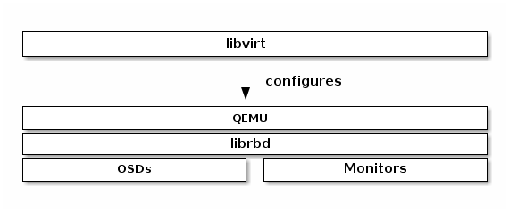

Install Virtualization for Block Device¶
If you intend to use Ceph Block Devices and the Ceph Storage Cluster as a backend for Virtual Machines (VMs) or Cloud Platforms the QEMU/KVM and libvirt packages are important for enabling VMs and cloud platforms. Examples of VMs include: QEMU/KVM, XEN, VMWare, LXC, VirtualBox, etc. Examples of Cloud Platforms include OpenStack, CloudStack, OpenNebula, etc.

Install QEMU¶
QEMU KVM can interact with Ceph Block Devices via librbd, which is an important feature for using Ceph with cloud platforms. Once you install QEMU, see QEMU and Block Devices for usage.
Debian Packages¶
QEMU packages are incorporated into Ubuntu 12.04 Precise Pangolin and later versions. To install QEMU, execute the following:
sudo apt-get install qemu
RPM Packages¶
To install QEMU, execute the following:
Install yum-plugin-priorities.
sudo yum install yum-plugin-priorities
Ensure /etc/yum/pluginconf.d/priorities.conf exists.
Ensure priorities.conf enables the plugin.
[main] enabled = 1
Note
ceph-extras on RPM-based systems is only needed on EL6-based distributions (RHEL 6, CentOS 6, Scientific Linux 6). It is not needed for Fedora or RHEL 7+.
Create a /etc/yum.repos.d/ceph-extras.repo file with the following contents, and replace {distro} with your Linux distribution. Follow the baseurl path below to see which distributions Ceph supports:
[ceph-extras] name=Ceph Extras baseurl=http://ceph.com/packages/ceph-extras/rpm/{distro}/$basearch enabled=1 priority=2 gpgcheck=1 type=rpm-md gpgkey=https://ceph.com/git/?p=ceph.git;a=blob_plain;f=keys/release.asc [ceph-qemu-source] name=Ceph Extras Sources baseurl=http://ceph.com/packages/ceph-extras/rpm/{distro}/SRPMS enabled=1 priority=2 gpgcheck=1 type=rpm-md gpgkey=https://ceph.com/git/?p=ceph.git;a=blob_plain;f=keys/release.ascUpdate your repositories.
sudo yum update
Ensure that non-priority versions are removed.
sudo yum remove qemu-kvm qemu-kvm-tools qemu-img sudo yum clean all
Install QEMU for Ceph.
sudo yum install qemu-kvm qemu-kvm-tools qemu-img
Install additional QEMU packages (optional):
sudo yum install qemu-guest-agent qemu-guest-agent-win32
Building QEMU¶
To build QEMU from source, use the following procedure:
cd {your-development-directory}
git clone git://git.qemu.org/qemu.git
cd qemu
./configure --enable-rbd
make; make install
Install libvirt¶
To use libvirt with Ceph, you must have a running Ceph Storage Cluster, and you must have installed and configured QEMU. See Using libvirt with Ceph Block Device for usage.
Debian Packages¶
libvirt packages are incorporated into Ubuntu 12.04 Precise Pangolin and later versions of Ubuntu. To install libvirt on these distributions, execute the following:
sudo apt-get update && sudo apt-get install libvirt-bin
RPM Packages¶
To use libvirt with a Ceph Storage Cluster, you must have a running Ceph Storage Cluster and you must also install a version of QEMU with rbd format support. See Install QEMU for details.
libvirt packages are incorporated into the recent CentOS/RHEL distributions. To install libvirt, execute the following:
sudo yum install libvirt
Building libvirt¶
To build libvirt from source, clone the libvirt repository and use AutoGen to generate the build. Then, execute make and make install to complete the installation. For example:
git clone git://libvirt.org/libvirt.git
cd libvirt
./autogen.sh
make
sudo make install
See libvirt Installation for details.